Wholesale - Clustering, clasificación y análisis de sensibilidad
Resumen
En este trabajo se analiza el dataset wholesale, del paquete {tclust}. La base contiene 440 clientes de un distribuidor mayorista. Las variables numéricas representan el gasto anual en seis categorías de productos: Fresh, Milk, Grocery, Frozen, Detergent y Delicatessen. Además, hay dos variables categóricas: Region y Channel.
El recorrido del análisis es el siguiente:
Primero se exploran los datos para entender su forma, sus valores extremos y la relación con Region y Channel.
Luego se transforman las variables numéricas con log1p() y se escalan para poder usar PCA y métodos de clustering.
Se aplica PCA para reducir la dimensionalidad y observar si aparecen patrones vinculados con Region o Channel.
Se realiza clustering jerárquico y se compara la partición con Channel.
Se comparan cuatro métodos de clustering: k-means, GMM, DBSCAN y OPTICS.
Se ajustan modelos de clasificación supervisada y semisupervisada para predecir Channel.
Finalmente, se repite el análisis quitando outliers multivariados para ver si las conclusiones se mantienen.
La idea central no es solo correr métodos, sino ver cuáles ayudan a entender la estructura de los datos y cuáles no.
0. Preparación
Cargamos los paquetes y el dataset.
library(tclust)
Robust Trimmed Clustering (version 2.2-0)
library(mclust)
Package 'mclust' version 6.1.2
Type 'citation("mclust")' for citing this R package in publications.
library(dbscan)
Adjuntando el paquete: 'dbscan'
The following object is masked from 'package:stats':
as.dendrogram
library(ggplot2)library(factoextra)
Welcome to factoextra!
Want to learn more? See two factoextra-related books at https://www.datanovia.com/en/product/practical-guide-to-principal-component-methods-in-r/
Primero revisamos si hay valores faltantes. Luego separamos las variables numéricas de las categóricas. Esto es útil porque PCA, clustering y clasificación van a trabajar principalmente con las variables numéricas, mientras que Region y Channel se usan para interpretar y comparar resultados.
No se observan valores faltantes. Por eso no es necesario imputar ni eliminar observaciones en esta etapa.
1.2 Distribución de las variables numéricas
Miramos histogramas y boxplots de las variables originales. Esto permite ver si hay asimetría, dispersión y valores extremos.
par(mfrow =c(2, 3))for (i in1:6) {hist(wholesale_num[, i],main =colnames(wholesale_num)[i],xlab ="")}
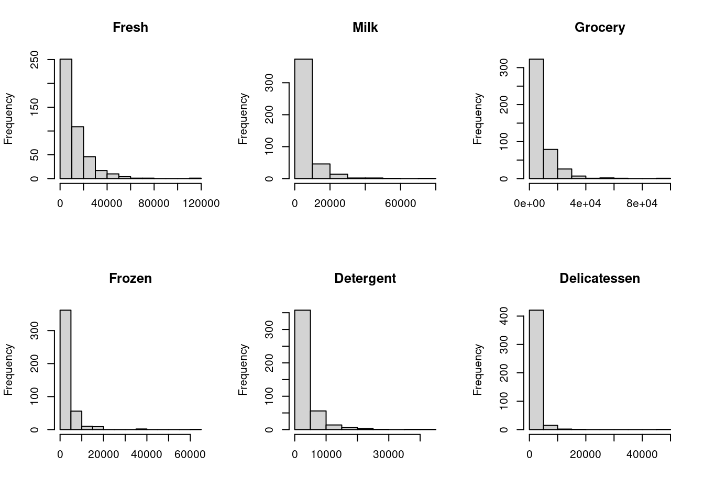
par(mfrow =c(2, 3))for (i in1:6) {boxplot(wholesale_num[, i],main =colnames(wholesale_num)[i])}
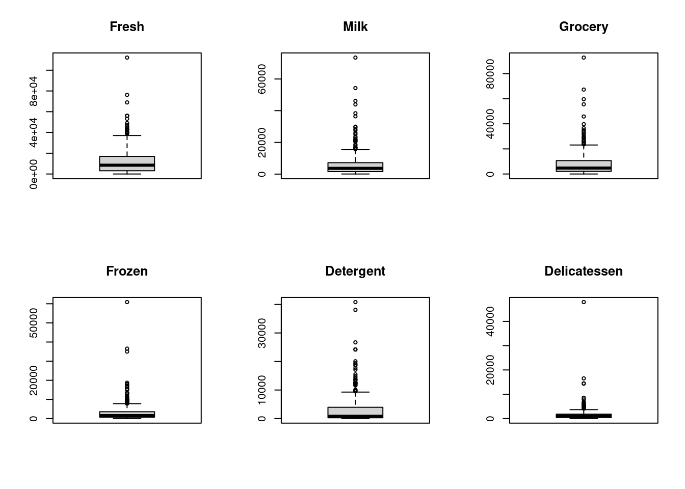
par(mfrow =c(1, 1))
Las variables de gasto presentan distribuciones asimétricas hacia la derecha. La mayoría de los clientes tiene consumos bajos o medios, y unos pocos clientes tienen consumos muy altos.
Los boxplots muestran muchos valores extremos. En principio no los tomo automáticamente como errores, porque pueden representar clientes grandes o con un perfil de compra diferente.
1.3 Transformación logarítmica
Como las variables tienen mucha asimetría positiva, aplicamos log1p(), que calcula log(x + 1). Esta transformación reduce el peso de los valores muy altos sin eliminar observaciones.
wholesale_log <-log1p(wholesale_num)par(mfrow =c(2, 3))for (i in1:6) {hist(wholesale_log[, i],main =colnames(wholesale_log)[i],xlab ="")}
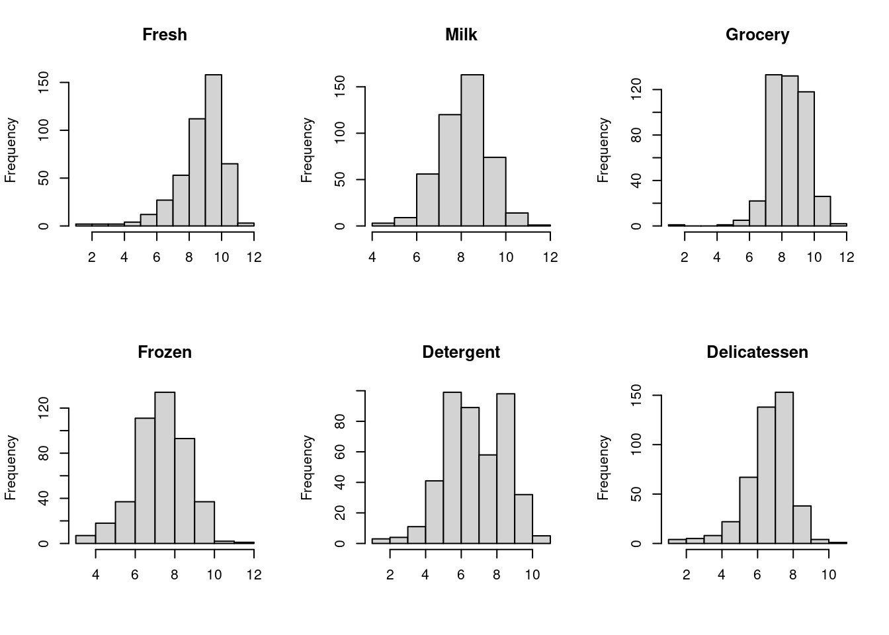
par(mfrow =c(1, 1))
Después de la transformación logarítmica, las distribuciones quedan más simétricas y son más adecuadas para analizar distancias, PCA y clustering.
1.4 Comparación por Region y por Channel
Ahora miramos si las variables transformadas cambian según Region y según Channel.
Al comparar por Region, las medianas son relativamente similares entre las tres regiones. La región 3 muestra más dispersión, pero también tiene más observaciones.
Al comparar por Channel, la diferencia es más clara. El Channel 2 tiende a tener valores más altos en Milk, Grocery y Detergent. El Channel 1 muestra más dispersión en algunas variables como Frozen y Delicatessen.
Esto anticipa que Channel podría estar más relacionado que Region con la estructura de consumo.
1.5 Balance de las variables categóricas
table(wholesale_factor[, "Region"])
1 2 3
77 47 316
table(wholesale_factor[, "Channel"])
1 2
298 142
La región 3 y el canal 1 tienen más observaciones, así que los datos no están balanceados. Esto no impide seguir con el análisis, pero después hay que comparar usando proporciones y, en clasificación, mirar también el rendimiento por clase.
1.6 Correlación entre variables
Revisamos la matriz de correlaciones entre variables transformadas.
cor_wholesale <-cor(wholesale_log)corrplot(cor_wholesale, method ="number", type ="full")
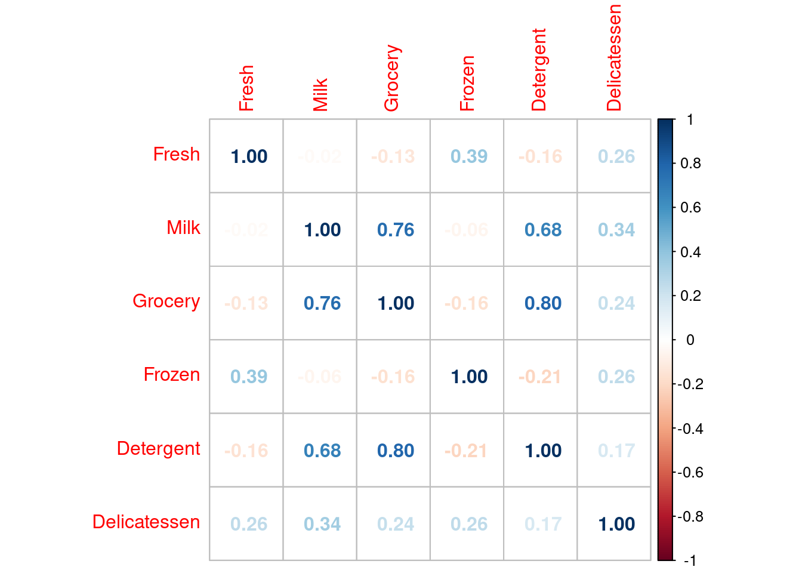
Las correlaciones más fuertes aparecen entre Grocery, Milk y Detergent. Esto indica que estas variables tienden a aumentar juntas: los clientes que compran más Grocery suelen comprar más Milk y más Detergent.
Podemos verlo también con gráficos de pares, coloreando por Region y por Channel.
Al colorear por Region, no aparece una separación clara. Al colorear por Channel, sí se ve una diferencia más marcada, sobre todo porque el canal 2 tiende a ubicarse en valores más altos de estas variables.
1.7 Centrado y escalado
Aunque aplicamos logaritmo, las variables todavía tienen medias y desvíos distintos. Por eso se aplica centrado y escalado antes de PCA y clustering.
El centrado lleva las variables a media cero y el escalado las lleva a desvío estándar uno. Esto evita que una variable tenga más peso solo por estar en una escala o dispersión mayor.
1.8 Outliers multivariados
Para detectar observaciones alejadas considerando todas las variables al mismo tiempo, usamos distancia de Mahalanobis.
Se usó como corte el percentil 97.5 de las distancias. Las observaciones marcadas no se eliminan automáticamente, porque pueden representar clientes reales diferentes al resto.
Los dos primeros componentes explican alrededor del 71% de la variación total. Esto indica que el plano PC1-PC2 resume una parte importante de la estructura multivariada.
PC1 está asociado principalmente a Milk, Grocery y Detergent. Las tres variables tienen cargas positivas y de magnitud similar.
PC2 está asociado principalmente a Fresh, Frozen y Delicatessen.
Entonces, los dos primeros componentes separan dos patrones principales de consumo: uno más relacionado con Milk/Grocery/Detergent y otro más relacionado con Fresh/Frozen/Delicatessen.
Al colorear por Channel, se observa una separación más clara, aunque con solapamiento. El grupo 2 aparece más desplazado hacia valores positivos de PC1. Esto coincide con la importancia de Milk, Grocery y Detergent en ese eje.
3. Clustering jerárquico
3.1 Distancias
Calculamos distancia euclidiana y Manhattan para ver si ordenan parecido a los clientes.
La correlación entre ambas distancias es muy alta. Por eso se continúa con distancia euclidiana, que es habitual para datos escalados y coherente con PCA y k-means.
3.2 Comparación de linkage
El linkage define cómo se mide la distancia entre grupos ya formados.
hc_single <-hclust(dist_euc, method ="single")hc_complete <-hclust(dist_euc, method ="complete")hc_average <-hclust(dist_euc, method ="average")hc_ward <-hclust(dist_euc, method ="ward.D2")par(mfrow =c(2, 2))plot(hc_single, main ="Single", sub ="", xlab ="", labels =FALSE)plot(hc_complete, main ="Complete", sub ="", xlab ="", labels =FALSE)plot(hc_average, main ="Average", sub ="", xlab ="", labels =FALSE)plot(hc_ward, main ="Ward.D2", sub ="", xlab ="", labels =FALSE)
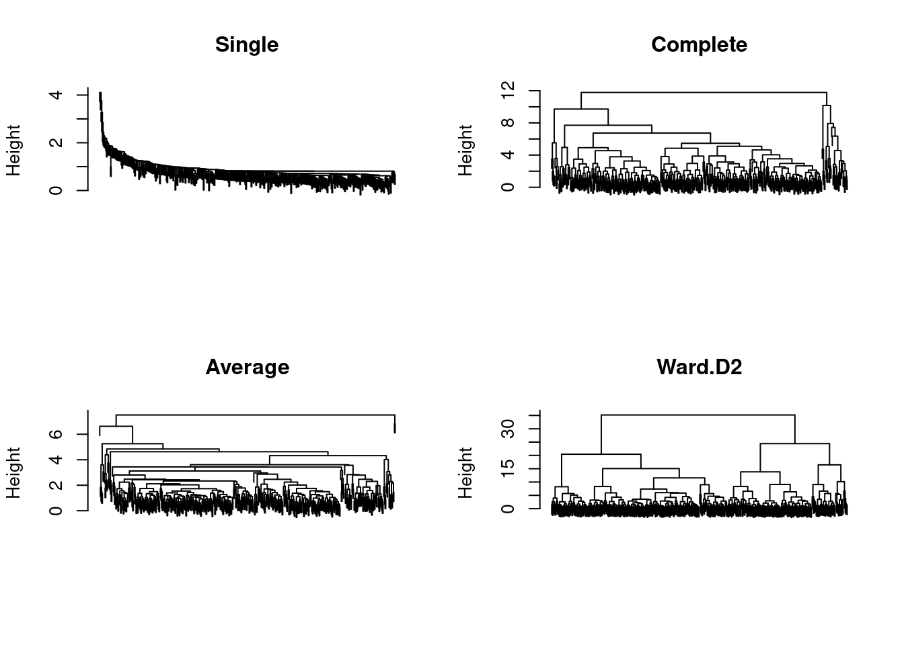
par(mfrow =c(1, 1))
Ward.D2 muestra una estructura más clara, con dos grandes ramas principales y grupos más compactos. Por eso se continúa con el clustering jerárquico usando Ward.D2.
3.3 Alturas de fusión
heights <-sort(hc_ward$height, decreasing =TRUE)n_max <-15plot(1:n_max, heights[1:n_max],type ="b",pch =19,xlab ="Fusiones ordenadas de mayor a menor altura",ylab ="Altura de fusión",main ="Scree plot de alturas")
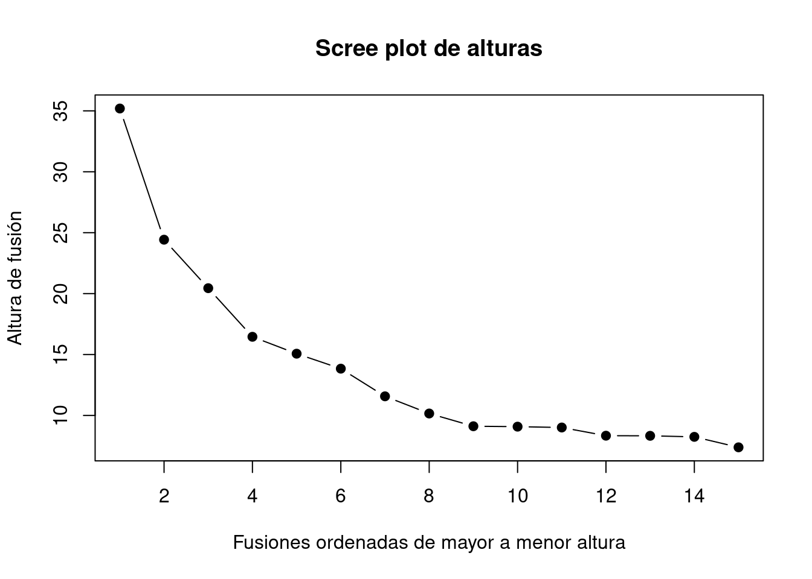
El gráfico de alturas sugiere que el corte podría estar en 2, 3 o 4 grupos. Para decidir mejor, se complementa con silueta promedio.
3.4 Silueta promedio y elección de k
sil_ward <-sapply(2:10, function(k) { grupos_temp <-cutree(hc_ward, k = k) sil_temp <-silhouette(grupos_temp, dist_euc)mean(sil_temp[, 3])})plot(2:10, sil_ward,type ="b",pch =19,xlab ="Número de grupos (k)",ylab ="Silueta promedio",main ="Silueta promedio — Wholesale")abline(v =which.max(sil_ward) +1, lty =2)
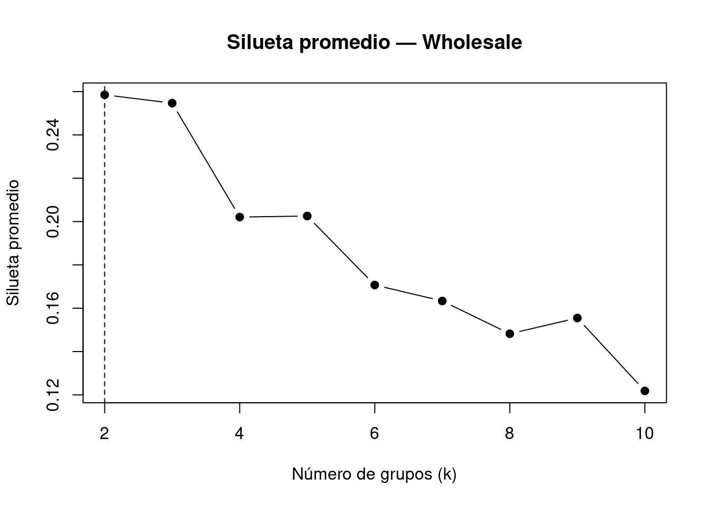
La silueta promedio más alta aparece en k = 2. Por eso se seleccionan dos grupos.
La partición es razonable pero no perfecta. La mayoría de las observaciones tienen silueta positiva, aunque algunas aparecen con valores negativos.
3.5 Comparación con Channel
tabla <-table(grupos, wholesale$Channel)tabla
grupos 1 2
1 47 131
2 251 11
prop.table(tabla, margin =1)
grupos 1 2
1 0.26404494 0.73595506
2 0.95801527 0.04198473
El grupo 1 está compuesto principalmente por observaciones de Channel 2, mientras que el grupo 2 está compuesto casi totalmente por observaciones de Channel 1.
La partición obtenida por clustering jerárquico se relaciona bastante bien con Channel, aunque no de forma perfecta.
4. K-means, GMM, DBSCAN y OPTICS
En este punto se comparan cuatro métodos de clustering. La comparación se hace mirando si los grupos encontrados se relacionan con Channel.
K-means separa los datos en dos grupos. La variabilidad explicada es cercana al 30%, lo que indica que la división captura parte de la estructura, aunque no representa una separación perfecta.
K-means recupera bastante bien la estructura asociada a Channel: un grupo queda casi completamente asociado a Channel 1 y el otro principalmente a Channel 2.
4.2 GMM con dos grupos
Ajustamos GMM forzado a dos grupos para compararlo directamente con k-means y con Channel.
gmm2 <-Mclust(wholesale_log_escalado, G =2)summary(gmm2)
----------------------------------------------------
Gaussian finite mixture model fitted by EM algorithm
----------------------------------------------------
Mclust VEE (ellipsoidal, equal shape and orientation) model with 2 components:
log-likelihood n df BIC ICL
-3046.82 440 35 -6306.678 -6373.78
Clustering table:
1 2
78 362
GMM con dos grupos no recupera bien la separación entre Channel 1 y Channel 2. Ambos grupos quedan dominados por Channel 1.
4.3 DBSCAN
DBSCAN busca clusters como zonas de alta densidad. Para elegir eps, se usa el gráfico de distancia al sexto vecino más cercano, porque el dataset tiene seis variables numéricas.
kNNdistplot(wholesale_log_escalado, k =6)abline(h =1.5, lty =2)
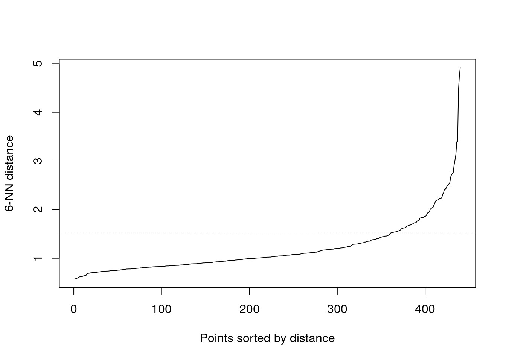
Se observa un cambio de pendiente alrededor de eps = 1.5.
db <-dbscan(wholesale_log_escalado,eps =1.5,minPts =6)table(db$cluster)
Con estos parámetros, DBSCAN identifica un único cluster principal y algunas observaciones como ruido. También se probaron otros valores de eps entre 1 y 2, pero el comportamiento fue similar.
Por eso DBSCAN no resulta adecuado para representar la estructura principal de estos datos.
4.4 OPTICS
OPTICS también trabaja con densidad, pero permite mirar mejor la estructura a través del reachability plot.
op <-optics(wholesale_log_escalado,minPts =6)plot(op)
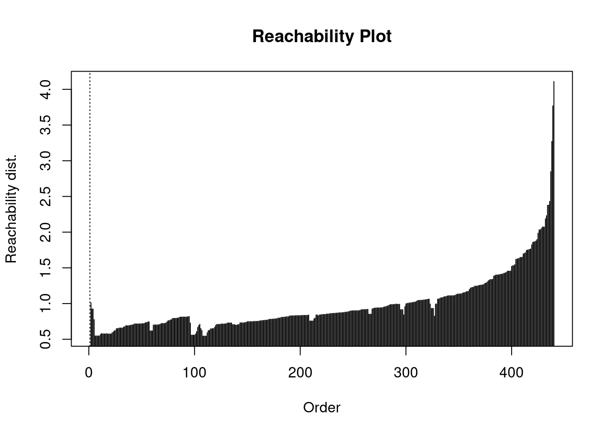
El gráfico no muestra valles grandes y claros. La mayor parte de las observaciones forma una secuencia bastante continua.
LDA calcula una función discriminante lineal porque Channel tiene solo dos grupos. Las medias por grupo muestran que el canal 1 tiene valores más altos en Fresh y Frozen, mientras que el canal 2 tiene valores más altos en Milk, Grocery y Detergent.
La accuracy global indica la proporción total de aciertos. Pero como las clases no están completamente balanceadas, también se mira el acierto por clase y la precisión balanceada.
EDDA ajusta un modelo supervisado basado en mezclas gaussianas. Para comparar con LDA, se evalúa sobre el conjunto de prueba.
5.4 Mixtura gaussiana semisupervisada
En un planteo semisupervisado, una parte de las etiquetas se conoce y otra parte se oculta. El modelo usa las etiquetas conocidas como guía, pero también aprovecha la estructura multivariada de las observaciones sin etiqueta.
En la base completa, el modelo semisupervisado obtiene el mejor rendimiento sobre el conjunto de prueba. Por eso se selecciona como clasificador principal en este análisis.
5.6 Gráfico del modelo seleccionado
El gráfico se realiza en el plano PCA para visualizar el conjunto de prueba. Los puntos están coloreados por Channel real, y los errores se marcan con otro símbolo.
En la entrega original se transformaron los datos, pero no se repitieron los análisis quitando los posibles outliers multivariados. Esta sección agrega esa mejora.
La idea no es afirmar que esos datos sean errores, sino revisar si las conclusiones principales cambian cuando se excluyen las observaciones más alejadas.
Al quitar los outliers, el PCA casi no cambia. Los dos primeros componentes pasan de explicar alrededor del 71.3% a 73.1%. PC1 sigue asociado a Milk, Grocery y Detergent, y PC2 sigue asociado a Fresh, Frozen y Delicatessen.
scores_pca_sin_out <- pca_wholesale_sin_out$xplot(scores_pca_sin_out[, 1], scores_pca_sin_out[, 2],col =as.numeric(wholesale_factor_sin_out$Channel),pch =19,xlab ="PC1",ylab ="PC2",main ="PCA sin outliers coloreado por Channel")legend("bottomright",legend =levels(wholesale_factor_sin_out$Channel),col =1:2,pch =19)
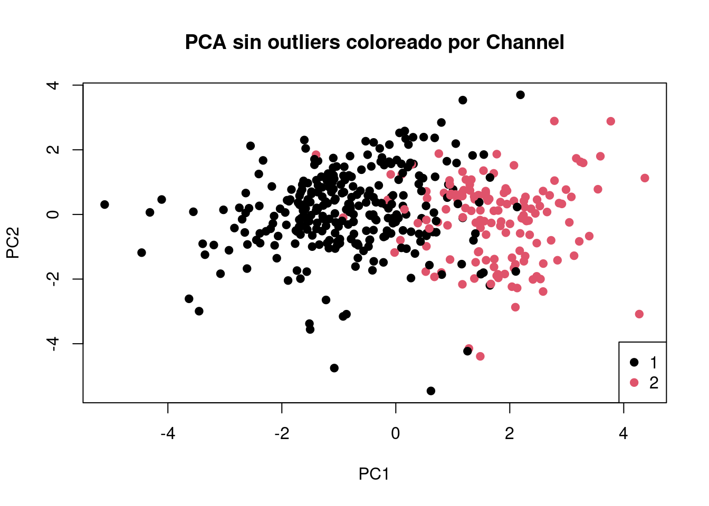
6.3 Clustering jerárquico sin outliers
dist_euc_sin_out <-dist(wholesale_log_escalado_sin_out)hc_ward_sin_out <-hclust(dist_euc_sin_out,method ="ward.D2")plot(hc_ward_sin_out,main ="Ward.D2 sin outliers",sub ="",xlab ="",labels =FALSE)
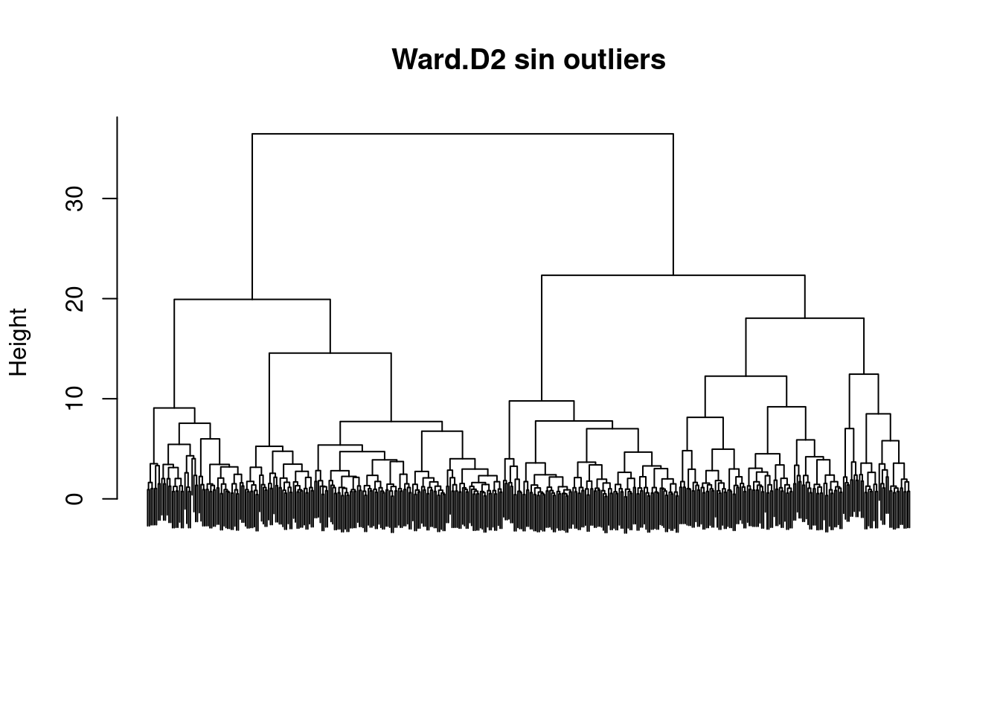
sil_ward_sin_out <-sapply(2:10, function(k) { grupos_temp <-cutree(hc_ward_sin_out, k = k) sil_temp <-silhouette(grupos_temp, dist_euc_sin_out)mean(sil_temp[, 3])})plot(2:10, sil_ward_sin_out,type ="b",pch =19,xlab ="Número de grupos (k)",ylab ="Silueta promedio",main ="Silueta promedio sin outliers")abline(v =which.max(sil_ward_sin_out) +1, lty =2)
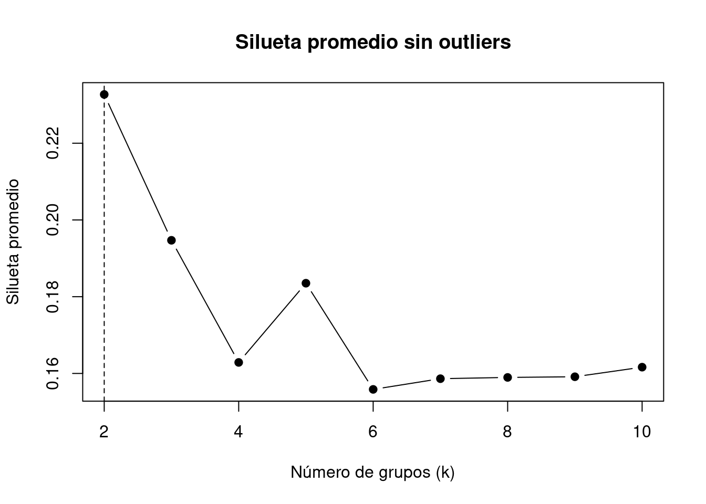
grupos_sin_out <-cutree(hc_ward_sin_out, k =2)tabla_hc_sin_out <-table(Grupo = grupos_sin_out,Channel = wholesale_factor_sin_out$Channel)tabla_hc_sin_out
Channel
Grupo 1 2
1 95 134
2 193 7
prop.table(tabla_hc_sin_out, margin =1)
Channel
Grupo 1 2
1 0.4148472 0.5851528
2 0.9650000 0.0350000
Al quitar los outliers, el clustering jerárquico mantiene un grupo muy asociado a Channel 1, pero el grupo asociado a Channel 2 queda más mezclado. La estructura sigue relacionada con Channel, aunque con menor claridad que en la base completa.
Al quitar los outliers, k-means sigue recuperando claramente la estructura asociada a Channel. La variabilidad explicada aumenta de alrededor del 30.1% a 32.2%, lo que indica una partición algo más compacta.
GMM mejora mucho al quitar los outliers. En la base completa, GMM con dos grupos no separaba bien Channel. Sin outliers, forma un grupo principalmente asociado a Channel 2 y otro casi completamente asociado a Channel 1.
Esto indica que los outliers afectaban bastante al modelo gaussiano.
6.6 DBSCAN y OPTICS sin outliers
kNNdistplot(wholesale_log_escalado_sin_out, k =6)abline(h =1.5, lty =2)
DBSCAN y OPTICS casi no cambian sin outliers. Siguen formando un único cluster principal y algunas observaciones como ruido. Entonces, no recuperan la separación entre canales. Esto sugiere que el problema no eran solo los outliers, sino que los datos no presentan clusters densos claramente separados.
6.7 Clasificación sin outliers
Repetimos la comparación entre LDA, EDDA y modelo semisupervisado usando la base sin outliers.
En la base sin outliers, LDA pasa a ser el mejor modelo. Tiene la mayor accuracy global y la mayor precisión balanceada. EDDA y el modelo semisupervisado también funcionan bien, pero quedan un poco por debajo.
Esto sugiere que, al quitar los casos extremos, la separación entre canales se vuelve más simple y un modelo lineal alcanza para clasificar bastante bien.
Cierre general
El análisis muestra que Channel está bastante relacionado con los patrones de gasto de los clientes. Esta relación aparece desde la exploración inicial, se ve en el PCA y también aparece en algunos métodos de clustering.
En la base completa, k-means fue el método no supervisado que mejor recuperó la estructura asociada a Channel. En clasificación, el modelo semisupervisado obtuvo el mejor rendimiento.
Al repetir el análisis sin outliers, las conclusiones principales se mantienen en PCA y k-means. Sin embargo, GMM mejora mucho y LDA pasa a ser el mejor clasificador. Esto muestra que los outliers no destruyen la estructura principal, pero sí pueden afectar la comparación entre modelos.